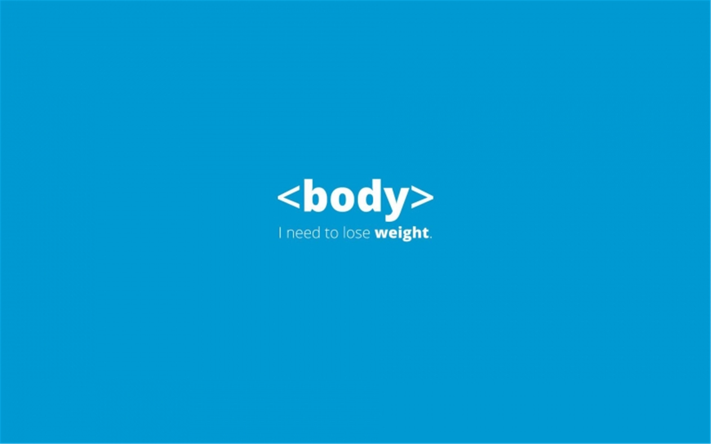

头部
页眉导航
导航1
导航2
导航3
主干，也可以当做段落
这是一篇文章
该标签规定独立的自包含内容。 一篇文章应有其自身的意义，应该有可能独立于站点的其余部分对其进行分发。 其元素的潜在来源： •论坛帖子 •报纸文章 •博客条目 •用户评论
这里面的东西大概不会显示
对图片进行描述

还可以在这里描述
地址：是个斜体
我仿佛听到有人说我
我想换个颜色
10:00
那么，有没有...
没有
年龄：
邮箱：
主页：
电话：
搜索：
颜色：
日期：
范围：
0
校区：
北京
武汉
西安
长沙
给Maxwell去电